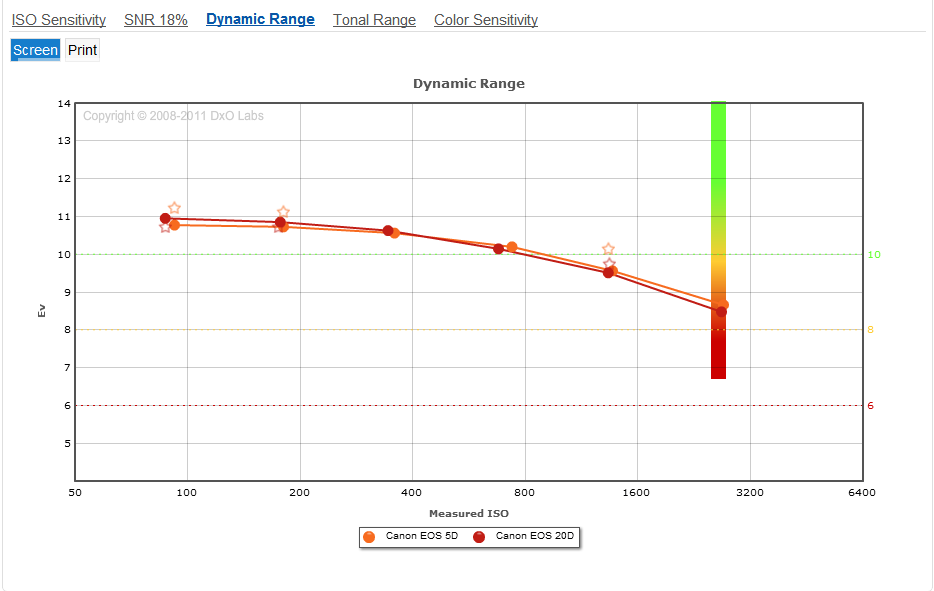
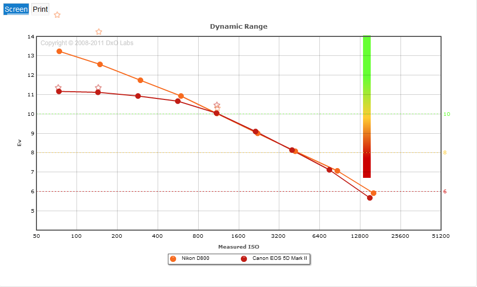
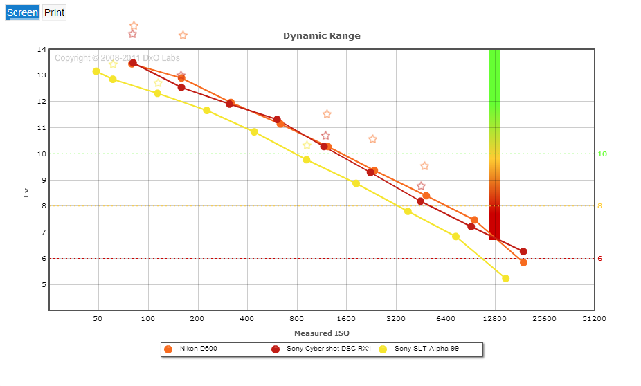
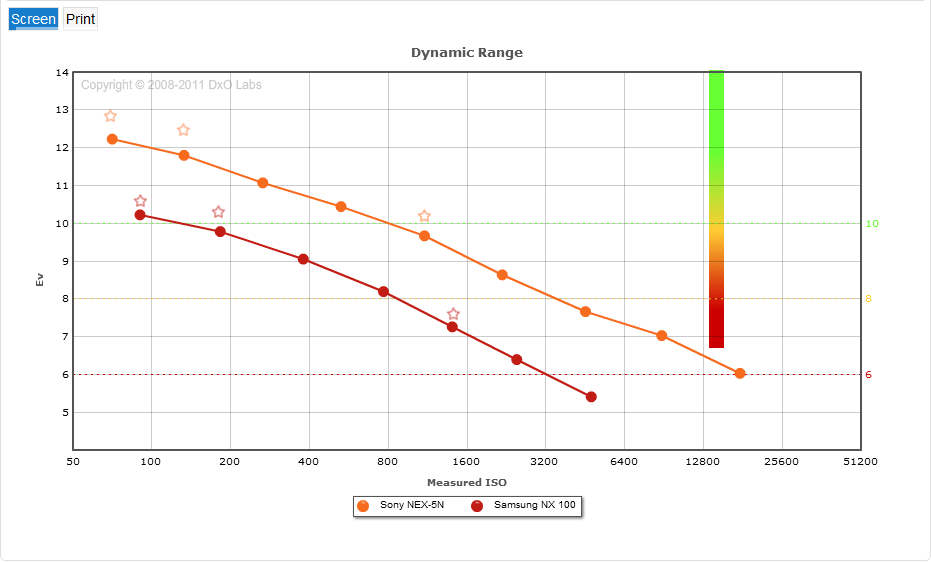
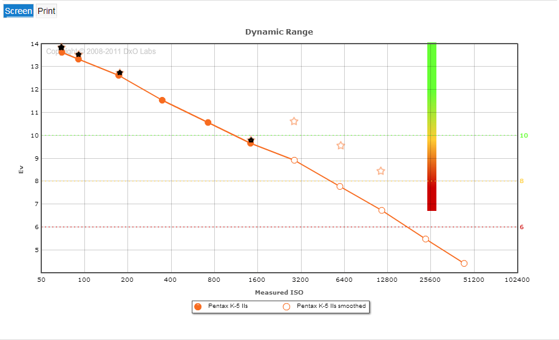
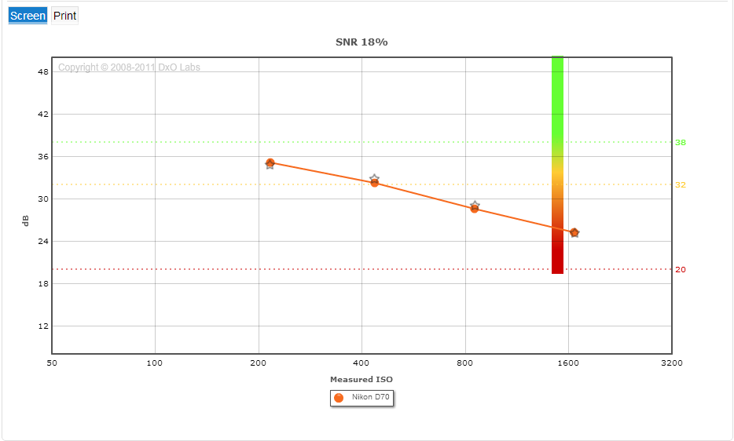
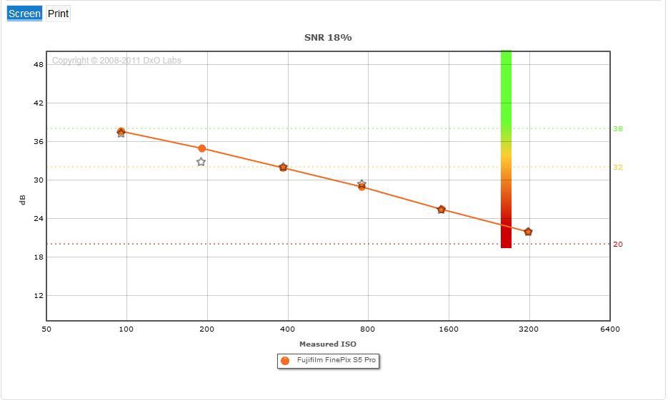

Врёт ли DxO?
Динамический диапазон
Динамический диапазон (далее в тексте - ДД) для цифровой фоткамеры - есть отношение максимального сигнала при котором не наблюдается клипинг светов к минимальному сигналу наблюдаемому на фоне шума. Таким образом ДД, в первом приближении, ограничен разрядностью АЦП с верху и темновым шумом снизу.
В качестве данных для проверки DxO воспользуемся данными полученными на форуме iXBT. Эти данные представляют собой результаты измерения шума темнового кадра выполненные по центральной области кадра 100 х 100 пикселей непосредственно по данным из RAW. Теоретически динамический диапазон должен быть не больше, то есть равным и меньше, измеренного отношения сигнал/шум. Программа- измеритель представляет собой конвертор dcraw с открытым кодом к которому добавлен измерительный модуль, измерения проводились самими владельцами камер.
Ниже представлены результаты наложения точек результатов измерения шума на графики DxO для некоторых популярных камер разных производителей и разных лет выпуска, а так же выпущенных по разным технологиям - ПЗС (CCD) и КМОП (CMOS).






Шумоподавление на ISO 3200 и выше, детектируется по увеличению значений корреляционной функции
Обсуждение:
- 1. Результаты совпадают качественно, то есть если кривая имеет загиб на графиках ДД DxO, то и график шума имеет загиб
-
- 2. В ряде случаев наблюдается полное или хорошее (в пределах 1/2 стопа) количественное совпадение
-
- 3. Теоретическое положение о том, что шум должен быть меньше ДД не нарушается
-
- 4. Отставание ДД от шума у камер Никон может быть объяснено нулевым значением точки черного в файлах Никон, в то время как у камер Кенон имеет место ненулевая “подставка”. Таким образом Никон обрезет шумы, что улучшает измеренный сигнал/шум, однако это не уменьшет минимальный сигнал наблюдаемый на фоне шума необходимый для измерения ДД.
-
- 5. У некоторых камер максимальное значение сигнала несколько меньше максимальной разрядности АЦП, что не учитывается программой-измерителем шума, что завышает данные по “максимальновозможный сигнал”/“темновой шум” по сравнению с реальным ДД.
-
SNR 18%
В то время как ДД зависит от темнового шума, сигнал / шум при 18% экспозиции определяет квантовым шумом. Последний зависит от числа фотоном и, соответсвенно, порожденных ими электрнов зарегистрированных одним пикслем. Измерения проведены при помощи той же программы-измерителя, но измерялся не темновой кадр, а кадр с равномерно освещенным объектом 18% яркости, что соответствует уровню сигнала в -14.8 dB. Для имеющихся в моем распоряжении камер получено:


Небольшой пример к выше изложенному
Рассмотрим 70 мегапиксельную матрицу CHR70M бельгийской фирмы CMOSIS, согласно спецификации матрица имеет:
| Full well charge | 13000 e- |
| Dark noise | 7 e- (RMS) |
| Dynamic range | 63 dB |
| SNR max | 41,1 dB |
Таким образом ДД не может превышать "Full well charge" / "Dark noise" = 13000 / 7 = 65.4 dB. На самом деле он немного ниже - 63 dB.
Максимальный сигнал / шум определяется емкостью ячейки и вседствии квантового шума будет равен N/N1/2 = N1/2 = 130001/2 = 114 = 41.1 dB, как и в спецификации.
18% С/Ш для этой матрицы будет составлять ( 13000 * 0.18 )1/2 = 33.7 dB
Выводы
не врет ни в чью пользу
All contents
copyright © vgrin, first published September 21, 2012. Ver 1.10, December 27, 2012